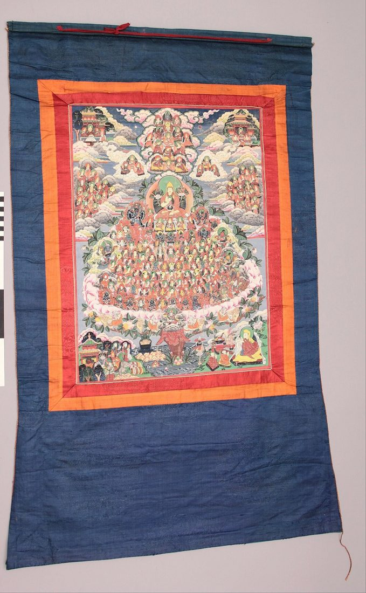

The Refuge Tree Thangka Explained: How to Read the Field of Merit
Some thangkas show a single deity. The refuge tree shows almost everyone at once. Dozens, sometimes hundreds, of tiny figures sit on the branches of a great wish-fulfilling tree that rises from a lake: teachers, buddhas, bodhisattvas, meditation deities, protectors, and stacks of sacred books. At first glance it can feel overwhelming. Once you understand its layout, it becomes one of the most logical and meaningful compositions in Himalayan art.
This guide explains what a refuge tree is, how it is organized, how it differs between lineages, and how practitioners use it. By the end, you should be able to stand in front of one and know where to look first.

What Is a Refuge Tree?
In Tibetan Buddhism, taking refuge means turning to the Three Jewels, the Buddha, the Dharma, and the Sangha, as sources of guidance. In Vajrayana practice the teacher, or lama, is added as the root of all three, and meditation deities and protectors are included as well. The refuge tree, also called the field of merit or field of accumulation, is a painted map of all these objects of refuge arranged together in one vision.
Each major lineage has its own refuge tree, showing its particular teachers and its own lineage of transmission. The painting therefore does two things at once: it depicts the universal objects of refuge, and it records the specific line of masters through whom the teachings reached a practitioner.
The Basic Layout
The lake and the tree
At the bottom of the painting there is usually a calm lake, often with lotuses, offering goddesses, and sometimes animals. From the center of the lake rises a single trunk that divides into several great branches. Each branch, like a level of a building, supports a particular group of figures. The tree itself symbolizes the source of all blessings and the way the path grows from a single root.
The central teacher
On the central branch, in the middle of the composition, sits the main figure. This is the root teacher in the form most important to that lineage. Above the central teacher, a vertical column of figures often climbs toward the top of the painting, representing the lineage of masters through whom the teachings passed, one after another, back to the original source.
The surrounding branches
The other branches hold the remaining objects of refuge. A common arrangement places the buddhas on one side of the central teacher, the bodhisattvas and arhats of the sangha on the other, and the dharma, shown as stacks of wrapped scriptures, behind the central teacher. Below the center, tiers of meditation deities, or yidams, descend from the most subtle tantric forms down to more accessible ones, followed by dakinis and, near the base, the protectors who guard the teachings.
Differences Between Lineages
The overall pattern is shared, but each school places its own masters at the heart of the tree. In Kagyu refuge trees the central figure is often Vajradhara, the primordial buddha, surrounded by lineage holders such as Tilopa, Naropa, Marpa, Milarepa, and Gampopa. Gelug refuge trees commonly place Je Tsongkhapa at the center, sometimes with smaller figures of the Buddha and Vajradhara visualized at his heart. Nyingma paintings frequently center on Padmasambhava, the Lotus-Born Guru, while Sakya trees highlight their own founding masters.
These differences are not decorative. They tell the viewer exactly which lineage the painting belongs to and which teachers a practitioner of that lineage would visualize. If you are trying to identify a refuge tree, the central figure and the column above it are the best place to start. Some refuge trees mix painted styles and textile borders; if that interests you, our guide to embroidered and appliqué thangkas explores the textile side of the tradition.
How Practitioners Use the Refuge Tree
Refuge trees are closely linked to the preliminary practices known as ngöndro, which include taking refuge while performing prostrations, often many tens of thousands of them. The practitioner visualizes the entire field of merit in the space in front of them, exactly as it appears in the painting, and imagines prostrating to it together with all beings. The thangka acts as a precise reference, so the visualization is stable and correct.
At the end of a session, practitioners traditionally imagine the figures dissolving into light, one group into the next, until everything merges into the central teacher and then into the practitioner's own heart. In this way the painting is not only a picture to look at but a structure for a complete meditation.

Reading a Refuge Tree Step by Step
- Start with the central teacher and identify the lineage from the main figure.
- Follow the column of figures upward to see the line of transmission.
- Look to either side for the buddhas and the sangha of bodhisattvas and arhats.
- Find the stacked scriptures behind the center, representing the dharma.
- Move down through the tiers of meditation deities and dakinis.
- Finish with the protectors at the base and the offerings in the lake.
Why Refuge Trees Are So Detailed
Because every figure in a refuge tree has a specific identity, these paintings demand exceptional precision. Faces, hand gestures, colors, and attributes must be correct for each master and deity, often at a very small scale. A large refuge tree can contain well over a hundred individual figures, each painted with its own posture and implements. The quality of this miniature work, and the clarity of the overall arrangement, is one of the main measures of a fine example. It also depends on a perfectly smooth surface, which is why careful canvas preparation matters so much for compositions of this kind.
Living with a Refuge Tree Thangka
A refuge tree is usually placed in a shrine room or meditation space, where it can be seen clearly during practice. Because of its fine detail, it benefits from good, indirect light and a viewing distance that lets you see both the whole composition and the individual figures. Many owners keep a simple key or identification chart nearby while they learn the figures.
Frequently Asked Questions
Is a refuge tree the same as a field of merit?
Yes. The terms are used for the same kind of painting, which shows all the objects of refuge assembled together.
Why do refuge trees look different from one another?
Each lineage depicts its own central teacher and line of masters, so the figures and their arrangement vary.
Do I need to recognize every figure?
No. Many people begin with the central teacher, the Three Jewels, and the protectors, and learn the others gradually.
Is a refuge tree only for practitioners?
It is designed for practice, but many collectors also value it as a remarkable record of a lineage and a masterpiece of composition.
Conclusion
The refuge tree turns an entire spiritual tradition into a single living image. Its lake, trunk, and branches organize teachers, buddhas, scriptures, deities, and protectors into an order that can be read and visualized. Once you know its logic, a painting that first looked crowded becomes a clear and deeply moving map of where a practitioner's trust and inspiration come from. Take time with it, return to it often, and let its many figures become familiar faces.